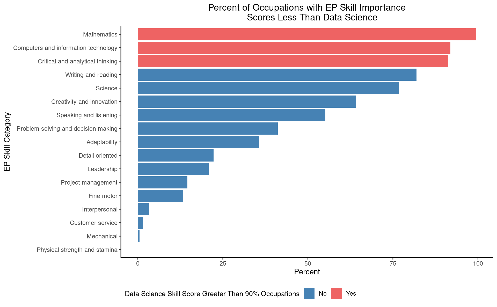
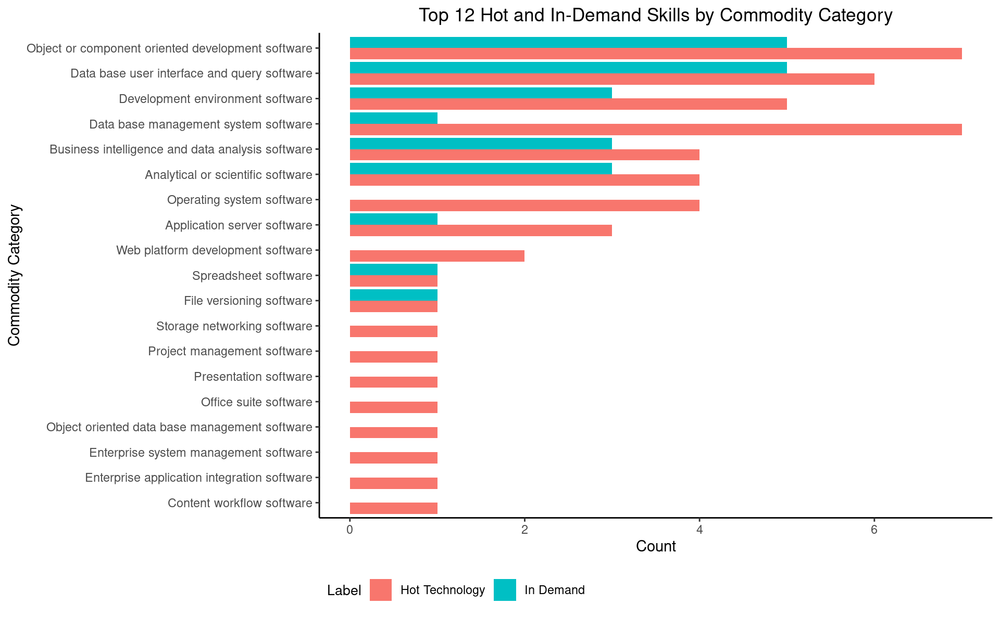
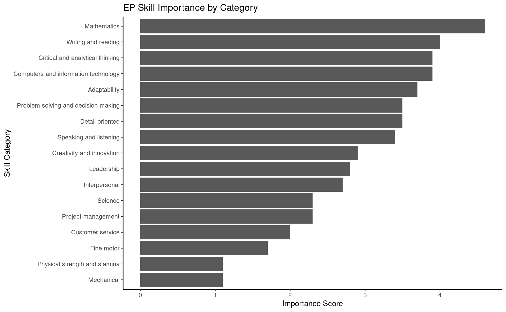

Project 3: Project Proposal
2025-03-26
Introduction
This project explores what are the most valuable data science skills. To answer this, the following methodology was followed:
- Data Collection - Import data from various sources such as Bureau of Labor Statistics, Projections Central, and O*Net.
- Data Normalization - Clean and normalize the data using various processing techniques.
- Export to Database - Store the processed data.
- Data Analysis - Conduct analysis on the structured data.
- Summary of Findings - Summarize key insights.
Research Questions
- Which skills are considered the most important in the data science field?
- What is relationship between projected employment and the importance of job skills?
- How does the presence of ‘hot technologies’ relate to skill importance in data science roles?
- What types of technical skills (based on commodity categories) are most commonly marked as in-demand or hot?
- What is the distribution of skill importance across different skill categories (e.g., cognitive, interpersonal)?
Data Sources
- Industry Profile for Data Scientists - This data source provides detailed information on the data science occupation and projected employment.
- O*Net Database – The O*NET database outlines various information that describe work and worker characteristics, including skill requirements for specific occupations. This data source was used to explore various skill sets for occupations related to data science.
Logical Model
Entity Relationship Diagram
Data Normalization
To reduce redundancy and improve data integrity, the data in this project was normalized. This helps to ensure that data is stored efficiently, avoiding duplication and inconsistencies, and to have a better-managed database. To normalize the datasets, five core tables were developed, and five reference tables were developed.
Connecting to MySQL Database
Tidy Data
To tidy and normalize the data the team performed the following 1. Renamed columns to allow for more intuitive names as well as ensure columns representing the same data values are referenced the same across all data frames. 2. Developed reference tables to store distinct categorical values (ex: skill categories) and remove partial dependencies. 3. Removed redundant columns (such as columns that are represented in reference tables) from the core data tables, retaining only relevant fields for analysis.
Question 1: Which skills are considered the most important in the data science field?
To explore the most critical skills in the data science field, we begin by analyzing the ep_skills_df_clean dataset. The goal is to identify which skills are disproportionately used in the data science field compared to all other occupations. This is done by calculating the percent of occupations having a lower skill importance score than data science for all EP skill categories.
Question 1 - Visualization
Question 2: What is relationship between projected employment and the importance of job skills?
To explore this question, we examine how the need for different occupational skills may change in the future by comparing the average score of each EP skill category across all occupations and weighted by base (2023) and projected (2033) employment.
Question 2 - Visualization

Question 3: What types of technical skills (based on commodity categories) are most frequently included on data science job postings (in-demand or hot)?
This analysis explores which categories of technical tools or platforms - referred to as commodity categories - are most frequently used in the job posting requirements. Commodities labeled as “hot technologies” indicate they are frequently included across all employer job postings, and “in-demand” indicate they are frequently included across job postings for a specific occupation. The goal is to understand what kinds of software or systems are frequently required for data science-related roles.
Question 3 - Visualization
Question 4: What is the distribution of skill importance across different skill categories (e.g., cognitive, interpersonal)?
This final analysis examines how skill importance scores are distributed across various skill categories - such as communication, analytical thinking, adaptability, and more. It’s an attempt to identify which broad categories of skills tend to receive higher importance ratings in data science-related occupations.
Findings
The analysis identified the top ten most important skills in data science, highlighting both technical knowledge and cognitive abilities like adaptability and decision-making. A weak positive correlation was found between skill importance and projected employment growth, suggesting broader labor market factors influence job demand. The presence of “hot technologies” did not significantly impact skill importance, indicating that trendy tools are not necessarily considered more essential. Finally, database query software and analytical tools were the most frequently labeled as “hot” or “in-demand,” while skill importance varied across different skill categories.